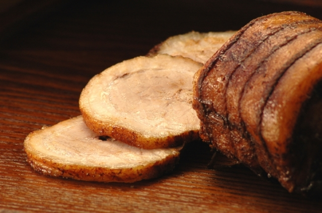

文書の基本
- ・ <!DOCTYPE>
- HTMLやXHTMLの各バージョンで使用可能なタグや属性などを、文書型定義（Document Type Definition ： DTDと略す）として詳細に定義します。
-
・ <html>～</html> <head>～</head> <body>～</body>
- <html>、<head>、<body>の３種類のタグで文書の基本的な構造を定義します。
- ・ <?xml veasion="1.0"encoding="☆"?>
- <html xmlns~="http://www.3.org/1999/xhtml"xm:lang="☆"lang="☆">
- XML宣言、名前空間と言語コードを指定します。
- ・ <title>～</title>
- ブラウザのタイトルバーに表示され、「お気に入り」や「ブックマーク」へ登録するときのデフォルトタイトルや履歴などに使用されます。
- ・ <base href="#"> <base href="#"target="#">
- 文書中の相対パスで書かれたURLが基準にするURLを指定します。
target属性はリンク先の文書を読み込むデフォルトウインドウを指定します。
- ・ <meta name="#" content="#">
- 文書の著者、概要、検索用キーワードなどを表せます。
- ・ <meta http-equiv="#" content="#">
- そのHTML文書のMIMEタイプと文字コード、デフォルトのスタイルシート言語、スクリプト言語などを表わせます。
- ・ <style>～</style>
- head内に配置して、HTML文書にスタイルシートを適用します。この形式で設定したスタイルは同じHTML文書内でのみ有効となります。
- ・ <script>～</script>
- HTML運所にスクリプトを組み込む場合に使用します。
- ・ <noscript>～<noscript>
- スクリプトを無効にしているブラウザ上で変わりに表示させる内容を指定します。
- ・ <div>～</div> <span>～</span>
- 特定の意味を持たない汎用的な範囲を設定できます。
- ・ <address>～</address>
- 文書制作者と連絡を取るための情報（作者、e-mailアドレス、住所、TELなど）を記載時に使用します。